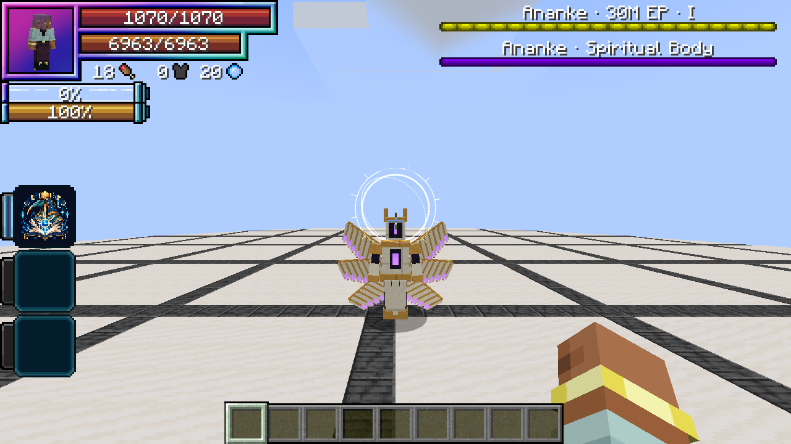
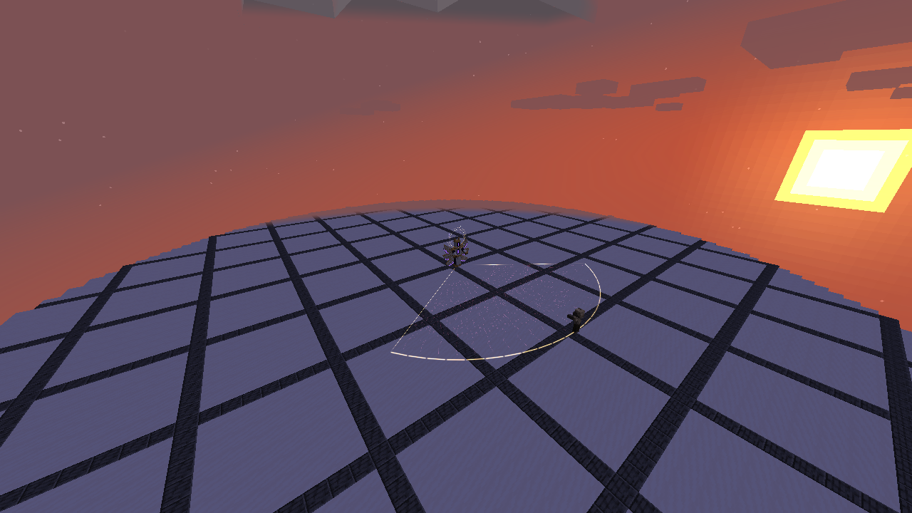

Ananke, the Unwritten End is the first Myth of Tensura Myths: a six-winged arbiter that guards the final page of an unwritten world. It combines fixed, readable attack patterns with native Ultimate and Godly skills.
Contents
Summoning
Craft a Writ of Last Dawn (wildhunt:writ_of_last_dawn) with this shaped recipe:
| End Crystal | Echo Shard | End Crystal |
| Dragon's Breath | Nether Star | Dragon's Breath |
| End Crystal | Echo Shard | End Crystal |
Use it on a lodestone with room for a 1.6-block-wide, 4.1-block-tall entity above it. Prepare at least 32 blocks of clear fighting space around the spawn and more room to retreat. The ritual requires a hostile difficulty and no Ananke within 128 blocks. Failure leaves the writ intact; creative players keep it on success.
Spawn eggs and /summon wildhunt:ananke also work for operators. Ordinary ritual summons use the current world; the encounter does not generate a dimension or build an arena for you.
Combat
Ananke flies after valid targets, fights nearby players and retaliates when attacked. Its arena anchor limits valid targets to 72 blocks from the spawn. Both HP and SHP bossbars appear at the upper right to tracking players within 80 blocks, clear of Tensura’s player HUD. The health bar shows phase I, II or III, and switches to the gold-refuge warning during Last Dawn.
| Phase | HP threshold | Changes |
|---|---|---|
| Sealed Testament | Above 65% | Fatebreaker, six-star Starfall Canticle, Eventide Procession and melee |
| Unwritten Crown | 65% or less | Faster decisions, eight-star Starfall, Astral Library and Spellbreak |
| Last Dawn | 30% or less | Fastest decisions; The Last Dawn joins the rotation |
Phases only advance during an encounter; healing does not relock a phase. Phase changes announce themselves with a six-point ascension effect. There is no forced invulnerability window or incoming damage cap. All attacks keep native hit immunity.
Moira's rites
See Moira for individual costs and full per-ability damage tables.
| Rite | Damage type | Fixed raw damage | Warning and counterplay |
|---|---|---|---|
| Fatebreaker | Aura slash — tensura:aura_slash |
1,800 | 1.2 s warning; leave the locked 110° fan within 16 blocks |
| Starfall Canticle | Light — tensura:light_elemental |
1,000 per star | Each three-block-radius marker gives 1.4 s warning; later markers track new positions, existing markers stay fixed |
| Eventide Procession | Darkness — tensura:darkness_elemental |
2,200 once per victim | 1.5 s preparation; dodge the moving hollow wave, stay behind its front or move above its damage band |
| The Last Dawn | Space — tensura:space_elemental |
4,800 | 3.75 s warning; stand in the gold ring 7–12 blocks from the cast center, or leave the 32-block sphere |
The gold refuge protects against The Last Dawn only. It does not protect against melee, Thoth or other simultaneous attacks. All rite origins lock when casting begins. No EP multiplier applies to their damage; Thoth's elemental boosts and native combat handling are separate.
Godly authority and Thoth
Ananke owns Thoth and therefore has the shared Godly classification passives: +35% damage against non-Godly owners, resistance/nullification penetration for its own damage, and immunity to non-Godly-origin Magic Interference. Other Godly owners prevent the ownership-based damage bonus against themselves; they do not disable penetration.
Ananke enables Arcane Sovereignty, paying its normal 180-magicule-per-second upkeep, for elemental boosts and native chanting/cost attributes. From phase two it uses:
- Astral Library: three books take turns firing every 0.25 seconds for ten seconds, cycling Fire, Water, Lightning, Earth, Wind, Light and Space. Each bolt is 800 raw damage before the ordinary 1.5× mastered multiplier and native modifiers. Cost 24,000 magicules; cooldown 35 seconds.
- Spellbreak: 900 raw magic damage before 1.5× mastery, plus Thoth's native interference/drain rules. Godly owners take the damage but are exempt from this mode’s drain and disruption. Cost 6,500 magicules; cooldown 15 seconds. See Spellbreak's full behavior.
Moira itself is Ultimate, so Lugh's Countermand can seal and interrupt its rites. Thoth is Godly and cannot be sealed by Countermand. Native activation restrictions can also stop a cast. Ananke has finite native resources; the AI pays skill costs and does not refill resources during an active fight.
Native skill package
| Skill | Registry ID | Use |
|---|---|---|
| Moira, Lord of Finality | wildhunt:moira |
Four autonomous encounter rites; aura slash, Light, Darkness and Space damage |
| Thoth, God of Magic | wildhunt:thoth |
Godly ownership, paid Arcane Sovereignty, Astral Library and Spellbreak |
| Mathematician | tensura:mathematician |
Native analysis skill; no invented extra NPC attack |
| Observer | tensura:observer |
Native perception/analysis; no invented extra NPC attack |
| Universal Perception | tensura:universal_perception |
Enabled native perception toggle |
| Thought Acceleration | tensura:thought_acceleration |
Enabled native support toggle |
| Chant Annulment | tensura:chant_annulment |
Native owned support skill |
| Spatial Domination | tensura:spatial_domination |
Native owned support skill; no autonomous teleport mode added |
| Self-Regeneration | tensura:self_regeneration |
Enabled native sustained recovery; respects healing suppression |
| Physical Attack Resistance | tensura:physical_attack_resistance |
Native physical defense |
| Spiritual Attack Resistance | tensura:spiritual_attack_resistance |
Native spiritual defense |
| Magic Resistance | tensura:magic_resistance |
Native magical defense |
| Abnormal Condition Nullification | tensura:abnormal_condition_nullification |
Native status protection |
| Pain Nullification | tensura:pain_nullification |
Native pain protection |
| Holy Attack Resistance | tensura:holy_attack_resistance |
Native holy defense |
All fifteen are registered, learned and mastered skills. Native server configuration can change their effects. Owning a support skill does not imply every player-only mode has custom boss AI. Self-Regeneration is gradual; Ananke does not have Ultraspeed or Infinite Regeneration, a stacking barrier passive or automatic phase healing.
Leaving and reloading
After 10 seconds without a valid target, Ananke resets to phase one and restores its HP, SHP and resources. It moves back toward its original anchor and does not despawn through ordinary distance rules.
Saving/loading preserves HP, resources, race and learned skills. Pending rites are cancelled on reload, preventing an invisible attack from resuming. Death, removal, interruption and encounter reset cancel owned visual/attack plans.
Rewards
A player-attributed kill drops one Dawn Testament (wildhunt:dawn_testament) and 1–3 Nether Stars. The boss grants 1,500 base experience; the First Myth challenge advancement grants 2,000 experience. Native loot/experience rules still apply. Ananke is in the native boss tags and counts as one distinct boss type for Hunter progression.
Drink a Dawn Testament for 2.4 seconds to heal 50% maximum HP, restore 50% maximum SHP, and fill aura and magicules to their current native caps. HP healing uses the native heal event; SHP restores directly to its native pool. Both clamp at the current maximum. The consumable starts a five-minute cooldown. It does not grant EP, change race or unlock Moira.
Gallery





Watch The Last Dawn in the Minecraft client.
Captures use an isolated validation arena. Warning stills pause the native encounter at specific moments; the clip shows the running cast. No shader pack or external rendering is used.
Native boss arena
For a managed encounter, stand at the center of a prepared arena and run:
/myths boss arena
/bossFight join @s ananke
The first command requires operator permission and creates a native profile named ananke in the current dimension: radius 48, up to four joined players, five-second start delay, fifteen-minute timer. It sets the boss spawn one block above the center and the entrance 24 blocks along +Z. The native arena system handles the fight lifecycle. Build safe ground and clear space at both locations first.
The profile is saved in the world's native data/boss_fights/ configuration. Existing ananke profiles are not overwritten. Use Tensura's /bossFight editor for adjustments; the join command also needs the permissions required by the base mod. Ananke's arena targeting is restricted to joined players. Boss-area-dimension restrictions are not automatically added to an ordinary lodestone ritual.